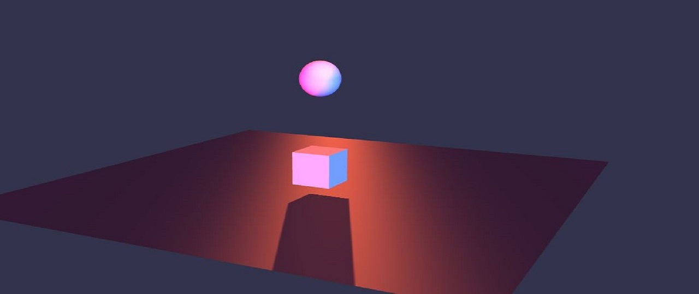
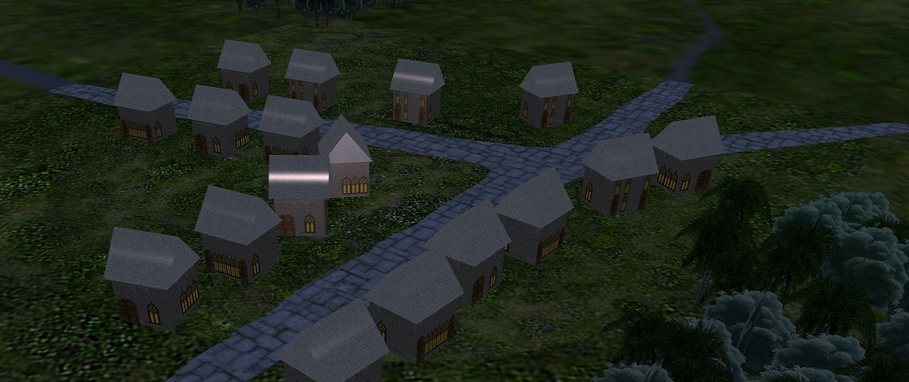
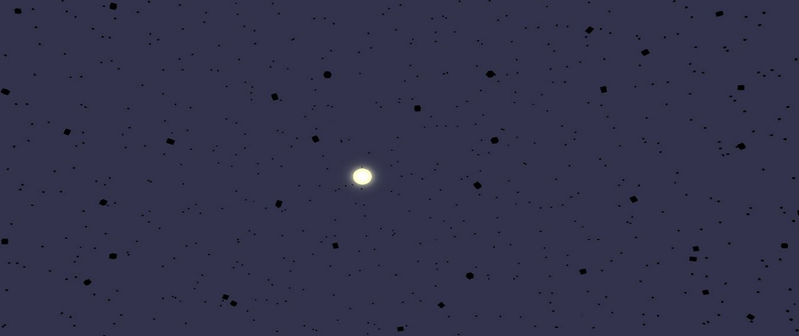
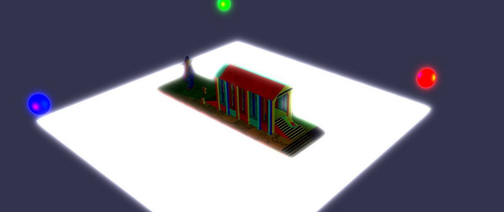

Lighting Demo
A simple lighting scene, using BabylonJS

Motion Demo
A simple player character motion demo. Use WSAD to control the character, and M to mute the music.

Village
A small village scene... enjoy your visit!

Physics
A gravity-like physics simulation containing 2000 objects. Toggle the stars attraction / repulsion effect by clicking on it!

Temple
A small temple illuminated by three circling directional lights. Quite the disco...